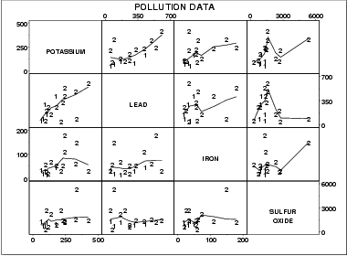

|
1.
Exploratory Data Analysis
1.3. EDA Techniques 1.3.3. Graphical Techniques: Alphabetic 1.3.3.26. Scatter Plot
|
|||
|
Purpose: Check Pairwise Relationships Between Variables |
Given a set of variables X1, X2, ... ,
Xk, the scatterplot matrix contains all
the pairwise scatter plots of the variables on a single page
in a matrix format. That is, if there are k variables, the
scatterplot matrix will have k rows and k columns and
the ith row and jth column of this matrix is a plot of
Xi versus Xj.
Although the basic concept of the scatterplot matrix is simple, there are numerous alternatives in the details of the plots.
|
||
| Sample Plot |

This sample plot was generated from pollution data collected by NIST chemist Lloyd Currie. There are a number of ways to view this plot. If we are primarily interested in a particular variable, we can scan the row and column for that variable. If we are interested in finding the strongest relationship, we can scan all the plots and then determine which variables are related. |
||
| Definition |
Given k variables, scatter plot matrices are formed by creating
k rows and k columns. Each row and column defines a
single scatter plot
The individual plot for row i and column j is defined as
|
||
| Questions |
The scatterplot matrix can provide answers to the following
questions:
|
||
| Linking and Brushing |
The scatterplot matrix serves as the foundation for the
concepts of linking and brushing.
By linking, we mean showing how a point, or set of points, behaves in each of the plots. This is accomplished by highlighting these points in some fashion. For example, the highlighted points could be drawn as a filled circle while the remaining points could be drawn as unfilled circles. A typical application of this would be to show how an outlier shows up in each of the individual pairwise plots. Brushing extends this concept a bit further. In brushing, the points to be highlighted are interactively selected by a mouse and the scatterplot matrix is dynamically updated (ideally in real time). That is, we can select a rectangular region of points in one plot and see how those points are reflected in the other plots. Brushing is discussed in detail by Becker, Cleveland, and Wilks in the paper "Dynamic Graphics for Data Analysis" (Cleveland and McGill, 1988). |
||
| Related Techniques |
Star plot Scatter plot Conditioning plot Locally weighted least squares |
||
| Software | Scatterplot matrices are becoming increasingly common in general purpose statistical software programs. If a software program does not generate scatterplot matrices, but it does provide multiple plots per page and scatter plots, it should be possible to write a macro to generate a scatterplot matrix. Brushing is available in a few of the general purpose statistical software programs that emphasize graphical approaches. | ||